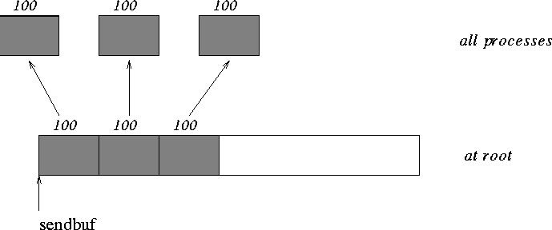
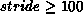
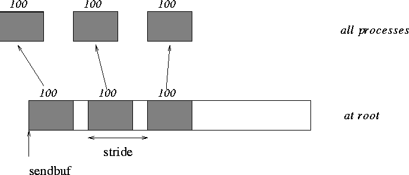
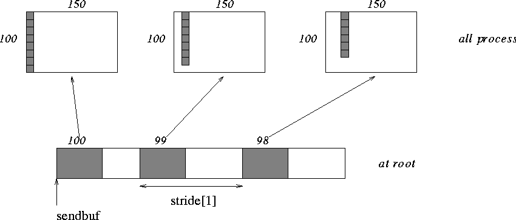

<html><head>
<meta http-equiv="content-type" content="text/html; charset=UTF-8">
<!-- This file was generated by tohtml from coll.tex -->
<title>Examples using  MPI_SCATTER,  MPI_SCATTERV</title>
</head><body bgcolor="#ffffff">
<hr><h2><a name="Node72">4.6.1. Examples using  MPI_SCATTER,  MPI_SCATTERV</a></h2>
<a href="http://www.mpi-forum.org/docs/mpi-11-html/node71.html#Node71"></a><a href="http://www.mpi-forum.org/docs/mpi-11-html/node71.html#Node71"></a><a href="http://www.mpi-forum.org/docs/mpi-11-html/node73.html#Node73"></a><br>
<b>Up: </b><a href="http://www.mpi-forum.org/docs/mpi-11-html/node71.html#Node71"> Scatter</a>
<b>Next: </b><a href="http://www.mpi-forum.org/docs/mpi-11-html/node73.html#Node73"> Gather-to-all</a>
<b>Previous: </b><a href="http://www.mpi-forum.org/docs/mpi-11-html/node71.html#Node71"> Scatter</a>
<p>
<br><b> Example</b>   
  
</p><p> 
The reverse of Example <a href="http://www.mpi-forum.org/docs/mpi-11-html/node70.html#Node70">Examples using  MPI_GATHER,  MPI_GATHERV
</a>.  
Scatter sets of 100 ints from the root to each process in the group.  
See figure <a href="http://www.mpi-forum.org/docs/mpi-11-html/node72.html#Figure8">8
</a>.  
</p><p> 
<br> 
</p><pre><tt>MPI_Comm comm; 
    int gsize,*sendbuf; 
    int root, rbuf[100]; 
    ... 
    MPI_Comm_size( comm, &amp;gsize); 
    sendbuf = (int *)malloc(gsize*100*sizeof(int)); 
    ... 
    MPI_Scatter( sendbuf, 100, MPI_INT, rbuf, 100, MPI_INT, root, comm); 
</tt></pre> 
   
<p> 
</p><p></p><p>
 
  
    
  <br> 
<b>Figure 8: </b><a name="Figure8">The root process scatters sets of 100 <tt> int</tt>s to each process
  in the group.
  </a></p><p> 
  
    
<br><b> Example</b>   
  
</p><p> 
The reverse of Example <a href="http://www.mpi-forum.org/docs/mpi-11-html/node70.html#Node70">Examples using  MPI_GATHER,  MPI_GATHERV
</a>.  
The root process scatters sets of 100 ints to the other processes,  
but the sets of 100 are <em> stride</em> ints apart in the sending buffer.  
Requires use of  MPI_SCATTERV.  
Assume 
.  See figure <a href="http://www.mpi-forum.org/docs/mpi-11-html/node72.html#Figure9">9
</a>.  
</p><p> 
<br> 
</p><pre><tt>MPI_Comm comm; 
    int gsize,*sendbuf; 
    int root, rbuf[100], i, *displs, *scounts; 
</tt><p><tt> 
... 
</tt></p><p><tt> 
MPI_Comm_size( comm, &amp;gsize); 
    sendbuf = (int *)malloc(gsize*stride*sizeof(int)); 
    ... 
    displs = (int *)malloc(gsize*sizeof(int)); 
    scounts = (int *)malloc(gsize*sizeof(int)); 
    for (i=0; i&lt;gsize; ++i) { 
        displs[i] = i*stride; 
        scounts[i] = 100; 
    } 
    MPI_Scatterv( sendbuf, scounts, displs, MPI_INT, rbuf, 100, MPI_INT, 
                                                              root, comm); 
</tt></p></pre> 
   
<p> 
</p><p></p><p>
 
  
    
  <br> 
<b>Figure 9: </b><a name="Figure9">The root process scatters sets of 100 <tt> int</tt>s, moving by
  <tt> stride</tt> ints from send to send in the scatter.
  </a></p><p> 
  
    
<br><b> Example</b>   
  
</p><p> 
The reverse of Example <a href="http://www.mpi-forum.org/docs/mpi-11-html/node70.html#Node70">Examples using  MPI_GATHER,  MPI_GATHERV
</a>.  
We have a varying stride between blocks at sending (root) side,  
at the receiving side we receive into the ith column of a 100
150  
C array.  
See figure <a href="http://www.mpi-forum.org/docs/mpi-11-html/node72.html#Figure10">10
</a>.  
</p><p> 
<br> 
</p><pre><tt>MPI_Comm comm; 
    int gsize,recvarray[100][150],*rptr; 
    int root, *sendbuf, myrank, bufsize, *stride; 
    MPI_Datatype rtype; 
    int i, *displs, *scounts, offset; 
    ... 
    MPI_Comm_size( comm, &amp;gsize); 
    MPI_Comm_rank( comm, &amp;myrank ); 
</tt><p><tt> 
stride = (int *)malloc(gsize*sizeof(int)); 
    ... 
    /* stride[i] for i = 0 to gsize-1 is set somehow 
     * sendbuf comes from elsewhere 
     */ 
    ... 
    displs = (int *)malloc(gsize*sizeof(int)); 
    scounts = (int *)malloc(gsize*sizeof(int)); 
    offset = 0; 
    for (i=0; i&lt;gsize; ++i) { 
        displs[i] = offset; 
        offset += stride[i]; 
        scounts[i] = 100 - i; 
    } 
    /* Create datatype for the column we are receiving 
     */ 
    MPI_Type_vector( 100-myrank, 1, 150, MPI_INT, &amp;rtype); 
    MPI_Type_commit( &amp;rtype ); 
    rptr = &amp;recvarray[0][myrank]; 
    MPI_Scatterv( sendbuf, scounts, displs, MPI_INT, rptr, 1, rtype, 
                                                            root, comm); 
</tt></p><p><tt> 
</tt></p></pre> 
   
<p> 
</p><p></p><p>
 
  
    
  <br> 
<b>Figure 10: </b><a name="Figure10">The root scatters blocks of 100-i ints into
  column <tt> i</tt> of a 100$ x $150
  C array.  At the sending side, the blocks are <tt> stride[i]</tt> ints apart.
  </a></p><p> 
  
    

</p><p>
</p><hr>
<a href="http://www.mpi-forum.org/docs/mpi-11-html/node71.html#Node71"></a><a href="http://www.mpi-forum.org/docs/mpi-11-html/node71.html#Node71"></a><a href="http://www.mpi-forum.org/docs/mpi-11-html/node73.html#Node73"></a><br>
<b>Up: </b><a href="http://www.mpi-forum.org/docs/mpi-11-html/node71.html#Node71"> Scatter</a>
<b>Next: </b><a href="http://www.mpi-forum.org/docs/mpi-11-html/node73.html#Node73"> Gather-to-all</a>
<b>Previous: </b><a href="http://www.mpi-forum.org/docs/mpi-11-html/node71.html#Node71"> Scatter</a>
<p>
</p><hr>
Return to <a href="http://www.mpi-forum.org/docs/mpi-11-html/node182.html">MPI 1.1 Standard Index</a><br>
Return to <a href="http://www.mpi-forum.org/docs/mpi-20-html/node306.html">MPI-2 Standard Index</a><br>
Return to <a href="http://www.mpi-forum.org/index.html">MPI Forum Home Page</a><br>
<hr>
<font size="-1">MPI-1.1 of June 12, 1995<br>
HTML Generated on August 6, 1997
</font>
</body></html>